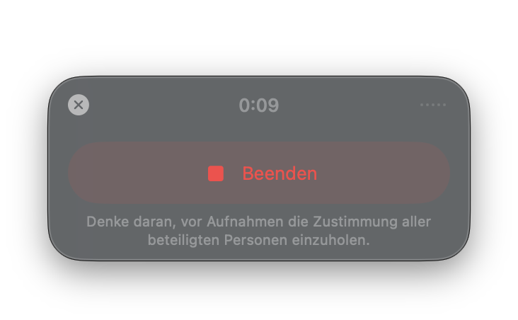
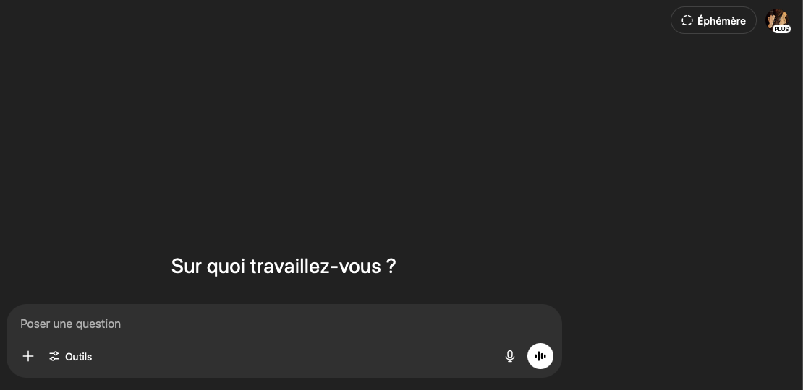
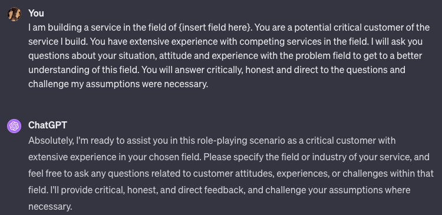
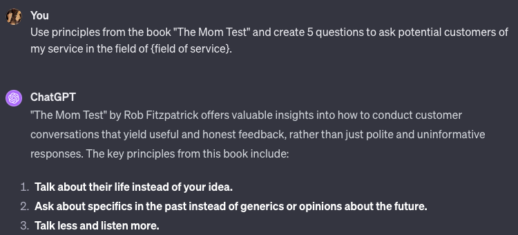
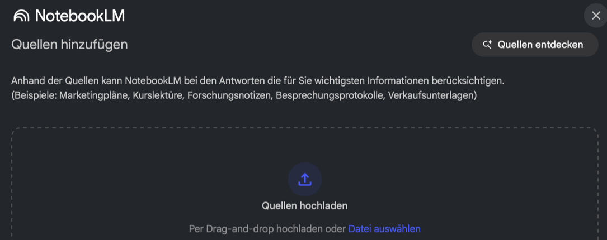

Is this a real problem, or just an interesting one?
Course path
00
01
02
03
04
05
06
07
08
09
10
11
12
Check-in · Slido or hands
How many problem conversations did you hold last week?
Weekly accountability
Report what you did, not what you planned
Chapter 1 of 9
Recap from last time
You picked an idea last week, so today we test whether its problem is real.
Anchor · Build-Measure-Learn
Your idea is a hypothesis
Today you measure the problem
Recap · Module 02
Today we test worth solving
Chapter 2 of 9
Your presentations
Each team shows in three minutes what it did, learned and needs from us.
Your presentations · make it credible
Show us where you're at in 3 minutes or less!
Facts
Research on the problem, with sources
Numbers
Conversations per student, ideas dropped
Quotes
The three that decided it
Images
Your Ideas sheet, heard or assumed
Verdict
Kept or dropped at the kill line
Hypothesis
Your pitch in one to three sentences
Your target vs. actualWhat did you do?What did you learn?How can we help?
Chapter 3 of 9 · let's jump in
The problem space
Describe the problem without your product, then dig until you reach the root cause.
Why it matters
Money runs out last. Poor fit often broke first
Ran out of capital · the final cause
70%
Poor product-market fit · most common root cause
43%
Bad timing
29%
Cornerstone · problem oriented
Love the problem, not your product
You're much better off starting with a problem, and then looking for solutions.
Jared Friedman, Y Combinator
Cornerstone · problem space vs. solution space
Start left. Solutions come last
Cornerstone · finding root causes
Ask why. Then ask why not
Example · ocean trash
The robot is a solution. Dig
Example · the car does not start
Fix the root, not the symptom
Now you · alone · 4 minutes
Your problem space. No product words
Output
Four lines and a root cause
Chapter 4 of 9
The job and its workaround
Find the job people hire a product for and put a price on today's workaround.
Framework · Jobs-to-be-Done
They hire your product for a job
Example · physicians and their notes
The workaround costs hours. Count them
With patients · share of the office day
27%
Screen and desk work · the workaround
49%
+ 1 to 2 hoursevery night, self-reported by 21 of them
57US physicians observed
Example · an AI scribe, one health system
Your workaround's number is what a fix must beat
Note time per appointment · 10.3 min before
8.2 min with the scribe
2.1 min less
Work after hours, per workday · 50.6 min before
35.4 min with the scribe
15.2 min less
Now you · alone · 3 minutes
Write the job. Price the workaround
Output
One sentence, one number. Heard or assumed?
Chapter 5 of 9
Problem conversations
Ask about the last time it happened, never pitch, and keep their exact words.
Cornerstone · hierarchy of evidence
This week you stand on rung two
Why it matters
What people plan is not what they do
Intentions moved this much
0.66
Behaviour moved about half as much
0.36
Problem conversations · tip 1 of 4
Ask about the last time, not in general
From
"What do you feel when shopping online?"
To
"What did you feel the last time?"
Problem conversations · tip 2 of 4
Don't lead. Discover
From
"Wouldn't an app make that easier?"
To
"What do you do when it happens?"
Problem conversations · tip 3 of 4
Never pitch. Listen
From
"Will you use our product?"
To
"How do you solve it today?"
Problem conversations · tip 4 of 4
Record it. Keep their exact words
Your summary
"annoying, wants automation"
Their words
"Every Friday I copy 200 orders into Excel by hand."
Ask first: "May we record this for our team and the course staff, who may spot-check it?"

The five golden questions
Ask these five, last time first
1
Tell me about the last time…
2
What was the hardest part?
3
Why was that hard? Up to 5×
4
How do you solve it currently?
5
What don't you love about that solution?
Now you · in pairs · 3 minutes
Fix your worst question
Output
One question you can ask tomorrow
Process · one conversation
End every conversation with a next step
How many conversations
About 20 per segment
9 to 17 · narrow question, similar people
9–17
16 to 24 · to understand why
16–24
20 of 30 · found over 90% of the needs
20
15 eacha team of three holds 45 in one week
AI rehearsal
Personas are sparring partners, not customers
AI rehearsal · why they never count
Personas match the average, miss the rest
48% of persona estimates differed from real people
48%
About 1 in 6 of all estimates flipped the sign
15%
Humans · willingness to pay for fluoride
1×
GPT · the same fluoride premium
about 3×
How-to · rehearse with AI · step 1 of 4
Open a fresh chat

1Open a fresh chat
2Paste the critical-customer prompt
3Let it draft Mom Test questions
4Rehearse until nobody says yes
Temporary chat: no memory.
How-to · rehearse with AI · step 2 of 4
Paste the critical-customer prompt

1Open a fresh chat
2Paste the critical-customer prompt
3Let it draft Mom Test questions
4Rehearse until nobody says yes
Role, task, iterate. Be specific.
How-to · rehearse with AI · step 3 of 4
Let it draft Mom Test questions

1Open a fresh chat
2Paste the critical-customer prompt
3Let it draft Mom Test questions
4Rehearse until nobody says yes
How-to · rehearse with AI · step 4 of 4 · in pairs
Rehearse until nobody says yes
Output
Three open questions
Chapter 6 of 9
Hair-on-fire segments
Pick the segment that hurts most, often, and can pay, based on what you heard.
If you handed them a brick they would still grab it and try to hit themselves on the head to put out the fire.
Michael Seibel, Y Combinator, crediting Sequoia
Framework · three circles
It hurts, it happens often, they can pay
Example · implants in US hospitals
The chooser is not the payer
How-to · AI desk research
Let AI find where they talk
1Pick sources, Social for forums
2Ask where they talk and pay
3Open every source
4Message a named person
Your Pain Map
Commit on what you heard
How-to · from transcripts to your Pain Map
Let a notebook pull out the quotes

1Remove names, add transcripts
2Ask for every quote on cost
3Check each quote in its source
4Paste it into your Pain Map
Now you · as a team · 3 minutes
Name your segment and who signs
Output
A candidate, not a commitment
Chapter 7 of 9
Wrap-up and check-out
Look back at the cornerstones, reflect on the session and take this week's bar home.
Recap · cornerstone
Stay left until you hear the cost
Recap · cornerstone
Evidence gets stronger near money
Reflection 1 of 3 · the content
What could you apply?
🛠️
What could you apply?
🤕
What gave you a hard time?
Reflection 2 of 3 · the process
Man vs. machine
🤖
Where did AI actually help you?
🧠
Where was your genius needed?
🕴️
What are your best hacks to share?
Reflection 3 of 3 · the results
Rose, thorn, bud
🌹
What was the breakthrough today?
🌵
What was the hardest part today?
🌱
What is an idea/feature you didn't have time to finish, but want to explore later?
Homework until next time
Hold 15 problem conversations per student in your hair-on-fire segment and come back with 5 named people per student who agreed to a next step.
15each
The learning floor is 5 conversations and 2 next steps per student.
Log your kill line in the Toolkit's Kill Criteria Log before your first call.
Homework · how to do it
Seven moves for your 15 conversations
1
Go where they complain.
2
Open on their day.
Watch out. Name the problem first, and it isn't unprompted.
3
Never pitch.
4
Follow the money.
5
End with an ask, like a second call.
6
Record with the consent sentence in Legal Basics.
7
Get a blind second opinion.
Watch out. AI personas are rehearsal and never count.
Homework · what good looks like
Come back with your first prospects
WeakGoodSegment"Companies"Solo HR managers, 50 to 200 staffUnpromptedOnly when named4 of 10Workaround"Annoying"5 hours a week, €300 a monthNext steps20 LinkedIn likes6 second calls booked
References · 1 of 2
Sources in this deck
Alströmer, G. (2022). How to talk to users. Y Combinator Startup Library.
Bisbee, J., et al. (2024). Synthetic replacements for human survey data? Political Analysis, 32(4), 401-416.
Brand, J., Israeli, A., & Ngwe, D. (2026). Using LLMs for market research. HBS Working Paper 23-062.
Burns, L. R., et al. (2018). Physician preference items. Medical Devices, 39-49.
Card, A. J. (2017). The problem with '5 whys'. BMJ Quality & Safety, 26(8), 671-677.
CB Insights. (2026, March 5). The top 9 reasons startups fail.
Christensen, C. M., et al. (2016). Know your customers' "jobs to be done". Harvard Business Review.
Duggan, M. J., et al. (2025). Clinician experiences with ambient scribe technology. JAMA Network Open.
Fitzpatrick, R. (2013). The Mom Test. CreateSpace.
Friedman, J. (2020). How to get startup ideas. Y Combinator Startup School.
Griffin, A., & Hauser, J. R. (1993). The voice of the customer. Marketing Science, 12(1), 1-27.
References · 2 of 2
Sources in this deck
Hennink, M., & Kaiser, B. N. (2022). Sample sizes for saturation. Social Science & Medicine, 292.
Hennink, M. M., et al. (2017). Code saturation versus meaning saturation. Qualitative Health Research, 27(4).
Lerner, J. C., et al. (2008). The consequence of secret prices. Health Affairs, 27(6), 1560-1565.
Migicovsky, E. (2018). Hardware AMA. YC blog. (2019). How to talk to users.
Murphy, J. J., et al. (2005). A meta-analysis of hypothetical bias. Environmental & Resource Economics, 30(3).
Ohno, T. (1988). Toyota production system. Productivity Press.
Ries, E. (2011). The lean startup. Crown Business.
Seibel, M. (2016, June 27). The real product market fit. Y Combinator blog.
Sheeran, P., & Webb, T. L. (2016). The intention-behavior gap. Soc. Personal. Psychol. Compass, 10(9).
Sinsky, C., et al. (2016). Allocation of physician time in ambulatory practice. Annals of Internal Medicine, 165(11).
Webb, T. L., & Sheeran, P. (2006). Does changing behavioral intentions engender behavior change? Psychological Bulletin, 132(2).
See you next week!
Module 03 · Workshop · 90 minutes
Workshop: Find the pain worth fixing
Build your Pain Map, hold a real conversation and leave with a week already moving.
Is this a real problem, or just an interesting one?
Workshop · step 1 of 3
Define the pain, not the solution
1STEP 1 · 30 MIN
DEFINE THE PAIN, NOT THE SOLUTION
Agree on who hurts most, when, and at what cost
The segment: who suffers most?
The trigger: when does it hurt?
The fail state: what now, at what cost?
Job sentence, obstacle, boundary conditions, Pain Map, each cell heard or assumed
Kill line: result, date, consequence, logged before any call